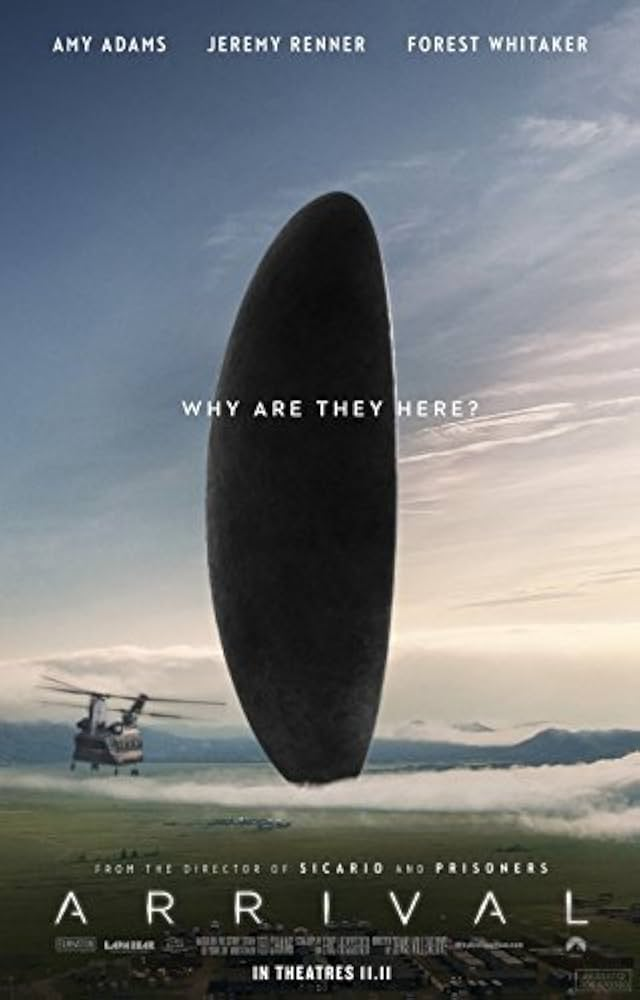
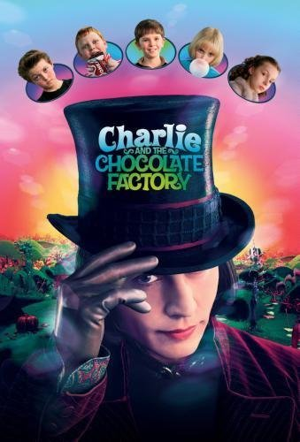
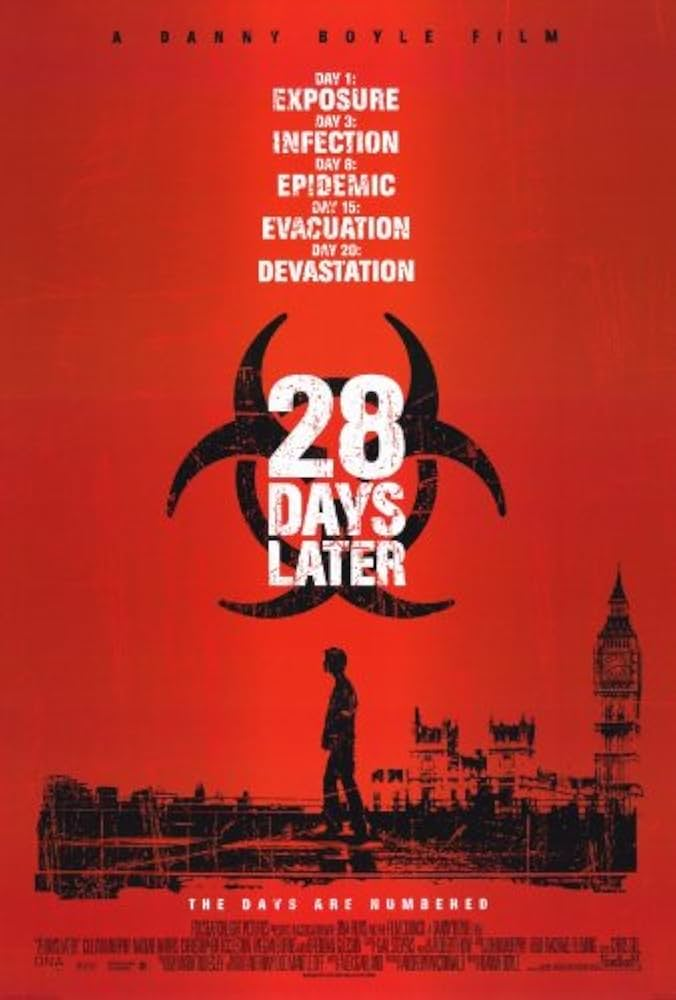
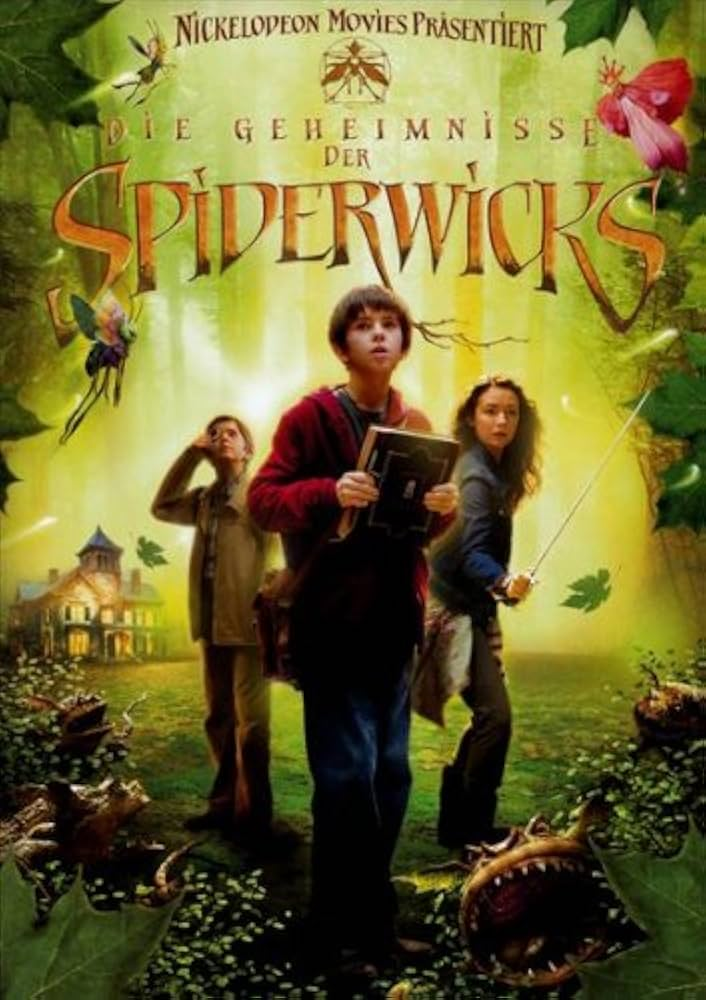
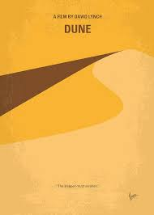
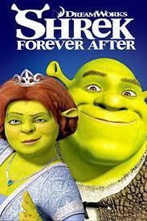
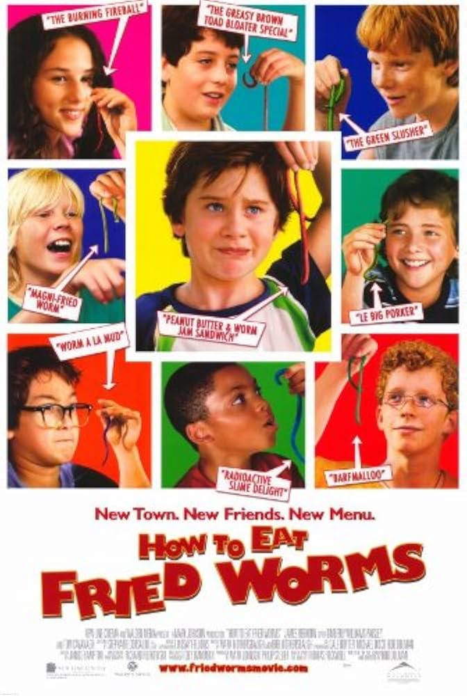
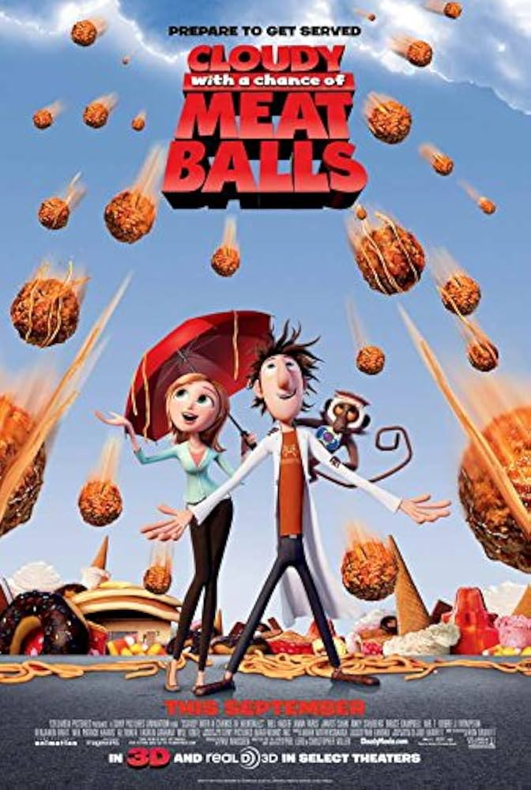

The Arrival
An alien spacecraft lands on earth. A linguistics professor is determined to find a way to communicate with the alien visitors. National tension is pushing close to a global war so they must find a way to communicate quickly.
The Lord of the Rings
The future of civilization rests on the fate of one ring. It has been lost for centuries and powerful forces are trying to recover it. It lands in the hand of Frodo who inherits this ring, he becomes responsible and has to complete a difficult journey.

Avatar
These movies take place in the alien world of Pandora where the Na’vi live. Humans want to explore Pandora but it is poisonous due to unbreathable air. The humans figure out a way to move freely on the planet and they attempt to navigate it.
The Platform
This film is set in a vertical prison called the pit. A platform filled with food descends from the top. Those on the higher platforms consume most of the food, leaving scraps for the people below.

Charlie and the Chocolate Factory
This movie is centered around a poor boy named Charlie Bucket. He finds a golden ticket for a tour of the mysterious chocolate factory. He joins four other children on the tour as they view the factory and learn the importance of good nature.
28 Days Later
A group of animal rights activists free a caged chimp infected with a horrific virus. The movie follows a bike courier that wakes up from a coma a month after the outbreak. He comes across a group of survivors and joins them in their journey as they try to find safety.
WALL - E
A trash compacting robot is left on a garbage filled earth, his job is to clean trash one piece at a time. One day, he spots another robot named Eve. He becomes fascinated with Eve and goes on a journey to follow her across the universe.

Spiderwick Cronicals
This movie follows three siblings who had to move houses due to a divorce. Within their new house they discover secrets and a guide left by Arthur Spiderwick. This leads them to find a mysterious world filled with faeries and other magical creatures.
Dune
The Dune movie series follows Paul Atreides, a gifted young man who is born into a powerful family. He must travel to a dangerous planet to protect the future of his people. There are many conflicts and resources are scarce, it is a fight to survive.
Shrek
Hardship hits the town of Swallow Falls and no one can afford to eat. A local inventor tries to slog th problems and creates a machine that converts food into water. The townspeople are pleased with this invention, but they begin to realize it comes with unintended consequences.
How to Eat Fried Worms
A boy named Billy accepts a dare to eat 15 worms in 15 days for $50, he wants to buy his own mini bike. As he tries to complete the bet he is sabotaged by the people that dared him.
Cloudy With a Chancew of Meatballs
Hardship hits the town of Swallow Falls and no one can afford to eat. A local inventor tries to slog th problems and creates a machine that converts food into water. The townspeople are pleased with this invention, but they begin to realize it comes with unintended consequences.
